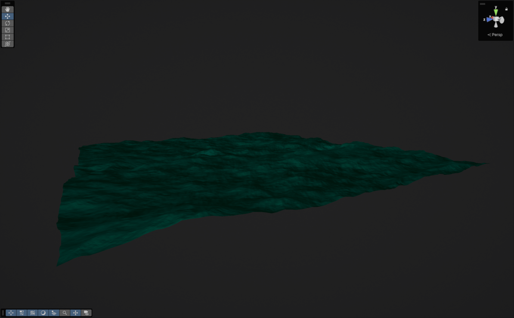

Abstract
Sections
Setup
Though I was building my water system for the Universal Render Pipeline (which would create an extra challenge later), HDRP is the best example of how Unity themselves would approach this problem. HDRP simplifies creating and managing oceans by having just one 'WaterSurface' component, which tells the backend to render the surface, caustics and underwater effects. This avoids the need for mesh renderers, renderer features or extra components spreading the functionality of the water over several objects and assets. Taking a peak at the source code, we see that HDRP updates and renders it's water by utilizing command buffers.
Command buffers are essentially a sequence of rendering instructions that you create and then send to the GPU. Then, they can be executed again and again without having to reconstruct and send the buffer, among other performance benefits.
We can hook into URP's per-camera rendering callback like so:
RenderPipelineManager.beginCameraRendering += RenderSurface;void RenderSurface(ScriptableRenderContext context, Camera camera)
{
CommandBuffer commandBuffer = CommandBufferPool.Get("Water CMD");
UpdateSurface(waterSurface, commandBuffer, context, camera);
context.ExecuteCommandBuffer(commandBuffer);
context.Submit();
commandBuffer.Clear();
CommandBufferPool.Release(commandBuffer);
}Wave Displacement
You might have already heard of the Fast Fourier Transform and it's uses in ocean rendering.
It has been used in dozens of games and movies after it was proposed in the 2004 paper Simulating Ocean Water by Jerry Tessendorf.
I first learned of it from a source I am much more familiar with; Acerola's 2023 video I Tried Simulating The Entire Ocean.
Both were extremely useful in understanding the wave displacement and water shading techniques below.
The thesis behind the Fourier Transform is that any periodic waveform can be built from a sum of sinusoids - sine and cosine waves.
The purpose of Fourier Transform is to take a waveform and decompose it into that sum of sinusoids, see: here to learn more about the Fourier Transform.
It's output, then, can be viewed as a wave graph in the frequency domain which, as opposed to describing how amplitude of a wave changes over time, describes how the amplitude of a wave changes with a range of frequencies.
For example, for a wave of frequency ~30hz, so would see a spike in the frequency domain at ~30hz. The size of the spike is proportional to it's amplitude, as we see in the figure below.
Now to perform the IFT on our JONSWAP spectra, there are several algorithms we can choose from.
We, of course, want to go with the fastest one available creatively known as the Fast Fourier Transform (FFT).
The FFT uses a 'Butterfly Algorithm' to recursively split the wave data in half avoiding unnecessary calculations, see here for detail on the mathematics.
To summarise all of this stuff in a sentence: we generate and progress a frequency domain wave spectrum, then perform the IFT over a set of discrete points (texture coords) to attain usable displacement values for our shader.
We can derrive a slope map for normal vectors from the displacement map, and the resulting textures look like this:


However, even with very detailed wave spectra, we have not completely erradicated tiling. So, we actually compute several wave spectra simultaneously and scale them differently over the ocean surface. The idea is to distort the details of each spectrum by the other spectra, reducing the "same-y-ness" of tiling artefacts.

Last in this section is a few additional notes I came across along the way:
You change the resolution of your FFTs at runtime by defining several kernals constant data like this...
#pragma kernel RowPass_128 FFTPass=RowPass_128 FFT_RESOLUTION=128 BUTTERFLY_COUNT=7
#pragma kernel ColPass_128 FFTPass=ColPass_128 COLUMN_PASS FFT_RESOLUTION=128 BUTTERFLY_COUNT=7
#pragma kernel RowPass_256 FFTPass=RowPass_256 FFT_RESOLUTION=256 BUTTERFLY_COUNT=8
#pragma kernel ColPass_256 FFTPass=ColPass_256 COLUMN_PASS FFT_RESOLUTION=256 BUTTERFLY_COUNT=8
#pragma kernel RowPass_512 FFTPass=RowPass_512 FFT_RESOLUTION=512 BUTTERFLY_COUNT=9
#pragma kernel ColPass_512 FFTPass=ColPass_512 COLUMN_PASS FFT_RESOLUTION=512 BUTTERFLY_COUNT=9
[numthreads(FFT_RESOLUTION, 1, 1)]
void FFTPass(uint3 id : SV_DISPATCHTHREADID)
{
for (int i = 0; i < 8; i++)
{
#ifdef COLUMN_PASS
_FourierTarget[uint3(id.xy, i)] = FFT(id.x, _FourierTarget[uint3(id.xy, i)]);
#else
_FourierTarget[uint3(id.yx, i)] = FFT(id.x, _FourierTarget[uint3(id.yx, i)]);
#endif
}
}And it is likely have to employ one or several techniques to decrease the large-scale tiling into the horizen. Approaches I have seen include:
- Attenuating the displacement and normal maps with distance.
- Computing a dozen or so FFT's for varying frequency bands and attenuating high frequencies with distance.
- Decreasing the uv tiling with LOD bands, with blending.
Water Shading
...
This is all sourced from a GDC talk on Atlas' water rendering, see here.
Dynamic Detail
- Mesh Generation
- Vertex Tessellation
TODO: Talk about integrating DrawMeshInstancedIndirect with Vertex Tessellation.
The mesh shown above is
Vertex Tessellation takes place inside the water surface shader, specifically in the Hull and Domain stages.
It allows us to recursively subdivide the triangles of our mesh, giving the vertex displacement more geometry to work with while not increasing the number of vertices sent to the GPU.
TODO: EXAMPLE GIF!
Tessellation shaders can uniformly subdivide an entire mesh, or dynamically subdivide it.
For this project, I increase the tessellation as we draw closer to the camera.
In this stage I also skip rendering triangles that are outside the camera's view planes, a practice known as frustum culling.
Utilizing both these methods means water near the camera can be depicted with very high detail, while keeping the total vertex count at a managable 10 000 verts.
Underwater Rendering
Caustics
Many games create the appearance of caustics by simply mapping an animated texture to underwater geometry. And for many games this is by far the best and easiest solution, especially those where the surface waves do not vastly change or performance is a large concern. However, I want my caustic patterns to be able to reflect a calm and slow ocean surface or to a violent and stormy one and anyway in-between.
This article describes how caustic textures can be generated by refracting the vertices of a dense plane mesh, and then intersecting them against a virtual plane. The color of the frag shader is then the difference in area between the non-refracted plane, and the refracted one. In Unity that looks like this:
float Frag (Varyings i) : SV_Target
{
float intialTriangleArea = length(ddx(i.originalPos)) * length(ddy(i.originalPos));
float refractedTriangleArea = length(ddx(i.refractedPos)) * length(ddy(i.refractedPos));
return intialTriangleArea / refractedTriangleArea;
}
Note that the virtual caustics plane does produce a lot of vertices when generated at a high resolution so, for me, finding the right balance of performance and detail was critical.
Godrays
float SampleGodrays(float3 positionWS, float3 lightDirection)
{
float3 normal = float3(0.0, -1.0, 0.0);
// Project caustics texture in light direction.
float3 forward = refract(lightDirection, normal, 1.0 / IndexOfRefraction);
float3 tangent = normalize(cross(forward, float3(0.0, 1.0, 0.0)));
float3 bitangent = cross(tangent, forward);
float3 sampleCoord = positionWS * _TilingFactor;
float2 uv = float2(dot(sampleCoord, tangent), dot(sampleCoord, bitangent)) * 0.5 + 0.5;
// Sample caustics texture at a low LOD of for some free blurring.
// This means we can get away with a larger step size by blurring away the artefacts created.
return SAMPLE_TEXTURE2D_LOD(_CausticsTexture, sampler_CausticsTexture, uv, 5).r;
}
Water Cutouts
We somehow need to know for any given point in world-space, if we are inside a cutout or not? Enter Signed Distance Functions.
Signed Distance Functions, or SDF's, are kind of magical. They essentially allow you to work out how far a point is from the surface of a shape, where negative values are inside the shape and positive are outside. I talk more about SDF's in my Terrain Generation project but, for my water cutouts, I needed an SDF which matched the shape of the submarine's hull. To achieve this, I wrote a custom SDF generator which could take a mesh and output a 3D texture where the red channel contains the distance from the surface. This means that for every point in the 3D texture, we must evaluate the distance to every triangle in the mesh and store the value closest to zero.
The function for that looks like this:
float EvaluateTriangle(int triangleIndex, float3 pos)
{
// a, b and c are the vertices of the triangle.
float3 a = _Vertices[_Triangles[0 + triangleIndex * 3]];
float3 b = _Vertices[_Triangles[1 + triangleIndex * 3]];
float3 c = _Vertices[_Triangles[2 + triangleIndex * 3]];
float3 pointOnTriangle = ClosestPointOnTriangle(pos, a, b, c);
float3 normal = cross(b - a, c - a);
float3 v = pos - pointOnTriangle;
float3 dirToFace = normalize(v);
float distToFace = length(v);
if (dot(dirToFace, normal) < 0)
{
distToFace *= -1;
}
return distToFace;
}
float SmallestPointDistanceToMesh(float3 pos)
{
float minAbsoluteDistance = 3.40282347e+38F;
float minDistance = 3.40282347e+38F;
for (int i = 0; i < _NumTriangles; i++)
{
float distance = EvaluateTriangle(i, pos);
float absoluteDistance = abs(distance);
if (absoluteDistance < minAbsoluteDistance)
{
minAbsoluteDistance = absoluteDistance;
minDistance = distance;
}
}
return minDistance;
}
The function I used to find the closest point on a triangle is from the Embree Ray Tracing Repo.
These SDF's can then be given to the shader as a sort of dictionary, along with an ID and matrix the submarines in the scene creating several precise cutouts.
As an aside, sampling 3D textures can get rather expensive, so I also implemented a bounding box check which has to pass first before we sample the texture.
This along with frustum culling and a capped render distance makes the performance hit much more managable.
Sources
The Fourier Transform
https://www.thefouriertransform.com/Wakes, Explosions and Lighting: Interactive Water Simulation in Atlas
https://www.youtube.com/watch?v=Dqld965-Vv0Reflection, Refraction and Fresnel
https://www.scratchapixel.com/lessons/3d-basic-rendering/introduction-to-shading/reflection-refraction-fresnel.htmlOcean Simulation - antoniospg
https://antoniospg.github.io/UnityOcean/OceanSimulation.htmlSimulating Ocean Water - Jerry Tessendorf
https://people.computing.clemson.edu/~jtessen/reports/papers_files/coursenotes2004.pdfI Tried Simulating The Entire Ocean - Acerola
https://www.youtube.com/watch?v=yPfagLeUa7kRendering Realtime Caustics in WebGL - Even Wallace
https://medium.com/@evanwallace/rendering-realtime-caustics-in-webgl-2a99a29a0b2cPeriodic Caustic Textures
https://www.dgp.toronto.edu/public_user/stam/reality/Research/PeriodicCaustics/index.html